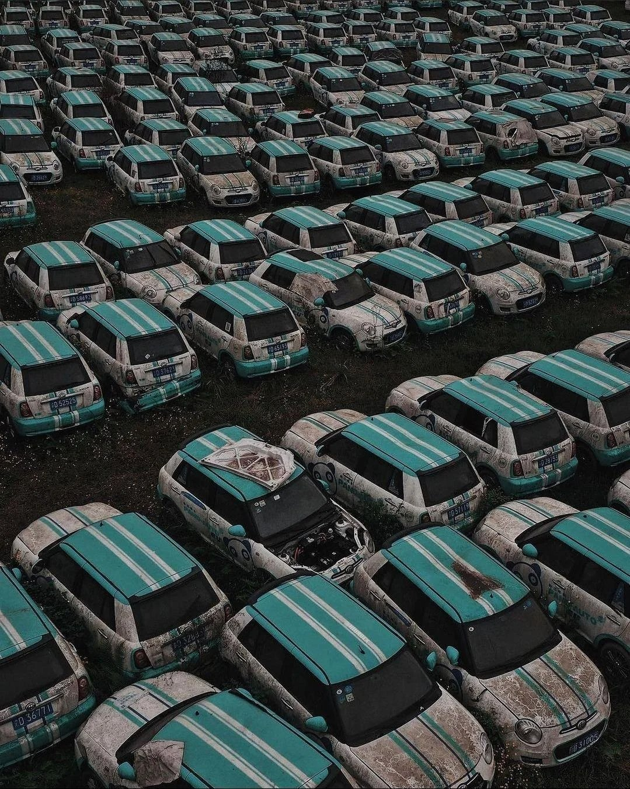
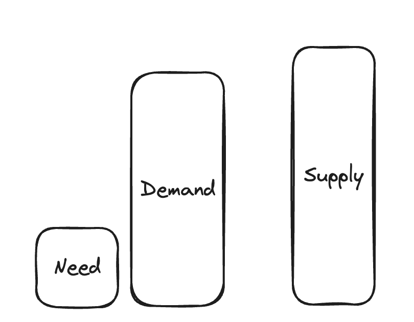

Since the advent of the free market, human society has experienced an unprecedented wave of growth and prosperity. Global GDP has increased 100-fold, with per-capita GDP rising 15-fold since the early 1800s. However, this tremendous growth has exacted a significant toll on the environment. As we stand on the brink of another nascent revolution, artificial intelligence (AI) promises to usher in a second wave of growth—this time, much more sustainable. Could AI help us achieve the elusive goal of expanding our economies while preserving the planet?
The Miracle and Pitfall of Demand-Driven Production
The miracle
The past two centuries have indeed been nothing short of a miracle in terms of economic growth, not just for the sheer scale of economic expansion but for its profound impact on human well-being.
Before the Industrial Revolution, global poverty was widespread, with the vast majority of the population living on subsistence agriculture, vulnerable to disease, famine, and political instability. But with the advent of mechanized production, steam power, and eventually electricity, societies began to shift from agrarian economies to industrial ones, spurring rapid urbanization and creating millions of new jobs.
 (source)
(source)
 (source)
(source)
As economies grew, so did living standards. In the 20th century, especially after World War II, growth accelerated dramatically. Advances in medicine, sanitation, and food production allowed populations to boom while simultaneously reducing mortality rates. Global poverty, which once seemed an inescapable fate for most, began to decline sharply. According to the World Bank, extreme poverty (defined as living on less than $1.90 a day) fell from about 80% of the world’s population in 1820 to less than 10% today. This reduction in poverty was most pronounced in Asia, where countries like China and India harnessed industrialization and global trade to lift hundreds of millions out of destitution.
As the engines of industry roared to life, they did more than just produce—they created a world where, for the first time, sufficient goods could be made to meet the needs of millions. Farms, once worked by hand, now harnessed the power of machines, yielding crops at unprecedented rates. Factories churned out textiles, tools, and eventually, the comforts of modern living that had once been unimaginable luxuries. This newfound capacity wasn’t just about survival; it was about abundance. Goods that had once been scarce or accessible only to the wealthy became attainable for the masses. Food production soared, homes were built, and technologies that improved everyday life spread across the globe. In this wave of growth, the world became a place where production was not only sufficient but could also fulfill the aspirations of those who sought more than just the bare necessities.
The pitfall
While we feel grateful for the growth and abundance that this era of production has brought us, it’s important to recognize the shadows cast by this prosperity. For every product that meets a need, there are countless others that sit unused, discarded, or wasted. The very systems that allowed us to produce more than ever before also led to overproduction, filling landfills with excess and polluting our air and waters with the byproducts of unchecked growth.


Is such a level of waste inevitable? I would argue that it is, given the nature of how our economies have evolved. The growth we’ve witnessed, particularly over the last century, has been driven largely by demand—an insatiable appetite for more. With the rise of consumerism, the focus shifted from simply meeting needs to creating new desires. As historian Frederick Allen observed, “Business had learned as never before the importance of the ultimate consumer. Unless he could be persuaded to buy and buy lavishly, the whole stream of six-cylinder cars, super heterodynes, cigarettes, rouge compacts, and electric ice boxes would be dammed up at its outlets.” (source)
This relentless push to fuel demand led companies to innovate not just in production but also in persuasion. Advertising, marketing, and product design all became tools to keep the consumer engaged and always wanting more. The result? A system where the pressure to buy, to replace, and to upgrade created a cycle of overproduction and, inevitably, waste.
Is consumerism at fault?
The solution is not to stay away from consumerism and demand-driven market economy. Without demand, there would be no profit, and without profit, companies would have no reason to put products on the market. This, in turn, would halt productivity, leaving not enough food on families’ tables or goods in their homes.
Over-production is also inevitable. The reality is that producing just enough to meet actual needs isn’t sufficient, because market systems and distribution networks are inherently imperfect. Food, clothes that are produced do not always reach who need them. True efficiency is hard to achieve, and inequality makes this even worse. If the distribution efficiency is only 10%, then we must produce ten times the necessary amount to meet the demand. This excess production, while ensuring availability, often leads to surplus and waste.
Surplus eats into profits if it isn’t consumed. To keep factories running, corporations thriving, and jobs secure, our dear consumers must continually want more. This is the crux of the demand-driven economy: without constant consumption, the entire system risks stagnation. As a result, businesses invest heavily in marketing, innovation, and new product lines to stimulate desire, encouraging consumers to keep buying—whether or not their needs have truly changed.

A way out: targeted production with AI
Amazon’s inventory planning system points to a promising direction. Algorithms can forecast what consumers are likely to purchase with remarkable accuracy, which allow buying and placing inventory accordingly to optimize order fulfillment. As a result, efficiency went up, and waste went down.
And we can push this even further. If demand is way higher than actual need, why not shift production to better match what people really need? Imagine if we weren’t constantly hit with endless ads and social media bragging. Our homes would be less cluttered, people wouldn’t need to take on debt just to keep up with the luxury status game, and we could all spend more time with loved ones or out in nature. Life would feel simpler and more focused on what really matters, rather than being driven by overconsumption.
This can happen through targeted production, with AI helping in two ways: automation (boosting production efficiency) and forecasting (improving market efficiency).
Automation isn’t new—it’s been part of past tech revolutions—but AI is different because it’s more versatile. It can handle many things from language tasks to tool use, extending the ‘Crown Jewels’ of human intelligence. AI can streamline workflows across corporate functions like accounting, finance, engineering, sales, and marketing, making processes faster and more efficient. Forecasting will further increase market efficiency by accurately predicting demand, allowing businesses to align production more closely with real-time consumer needs. These two factors—automation and forecasting—make anticipatory production and just-in-time production possible. Instead of waiting for demand to fully materialize, we can anticipate and initiate production just ahead of time—producing what is likely needed, when it’s needed.
Indirectly, AI can help curb the constant stimulation of consumer desires. The problem isn’t advertising itself but rather the excessive advertising that arises in overcrowded, saturated markets. When businesses struggle to meaningfully differentiate their products, they rely heavily on aggressive marketing to capture attention, contributing to the cycle of overconsumption. This reflects poor planning and a lack of clear insight into what consumers truly need—a symptom of incomplete information and insufficient foresight into future demands.
When businesses begin to realize they can be profitable with automation and better planning instead of excessive advertising, they can step back from the exhausting zero-sum game of trying to out-market each other. Their shareholders and employees can finally find peace.
Looking ahead
The AI revolution is still in its early days, and there are challenges like job displacement and energy use that worry people. But despite these hurdles, I am hopeful AI can help future generations enjoy a more sustainable and prosperous future.